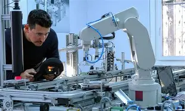
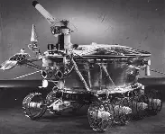
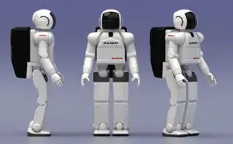
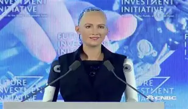
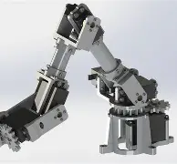
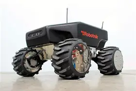
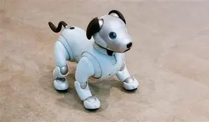

¿Qué es la Robotica?
La robótica es una disciplina que se ocupa del diseño, operación, manufacturación, estudio y aplicación de autómatas o robots. Para ello, combina la ingeniería mecánica, ingeniería eléctrica, ingeniería electrónica, ingeniería biomédica y las ciencias de la computación, así como otras disciplinas.

Historia de la Robotica
La palabra robot proviene del vocablo checo robota, que significa literalmente “esclavo”. Fue puesto en circulación por el escritor checo Karel Capek (1890-1938) con su novela R.U.R de 1920.
Igualmente, la palabra robótica, entendida como disciplina, fue acuñada por Isaac Asimov (1920-1992). Este escritor de Ciencia Ficción fue uno de los más célebres cultores del futuro imaginario robotizado.
Los primeros robots reales aparecieron entre 1950 y 1960. Se dedicaban a labores industriales simples, mecánicas y automatizadas. En 1971 se utilizó el primer robot dedicado a la exploración espacial. Fue puesto en la superficie marciana por el proyecto espacial de la extinta Unión Soviética, Se perdió contacto con él tan sólo unos segundos después del aterrizaje.

Los estadounidenses imitaron este gesto en 1976 con el Viking I de NASA, demostrando así el enorme potencial de los robots en la exploración espacial y en otros ambientes extremos, como el fondo marino. Incluso se intentó emplear robots en la remoción de los escombros del reactor destruido en Chernóbil, en 1986, pero la radiación freía los circuitos a los pocos segundos de uso.
El primer robot humanoide y bípedo, el ASIMO, fue anunciado en Japón en 2011, y se hicieron demostraciones de su capacidad de interacción con humanos.

Los adelantos en inteligencia artificial permitieron que en 2015 apareciera también Sophia, un robot ginoide con apariencia humana realista, diseñado para adaptarse al entorno social con humanos y ser capaz de recordar, reconocer caras y simular expresiones faciales.

¿Tipos de Robot?
Los robots se clasifican generalmente en base a su pertenencia a las diferentes generaciones de robots construidos, que son:
Primera generación. Robots multifuncionales con un sistema simple de control, manual, de secuencia fija o secuencia variable.
-
Segunda generación. Robots de aprendizaje, que repiten secuencias de movimientos previamente ejecutadas por operadores humanos.
Tercera generación. Robots de control sensorizado, controlados por algún tipo de programa (software) que envía las señales al cuerpo robotizado para llevar a cabo determinadas tareas mecánicas.
Otra forma de clasificación responde a la estructura del robot, pudiendo hablar de robots:
Poliarticulados. Tienen muchas piezas móviles.

Móviles. Son de tipo rodante o automotor.

Zoomórficos. Imitan la forma de algunos animales

Antropomórficos. Imitan la forma del ser umano